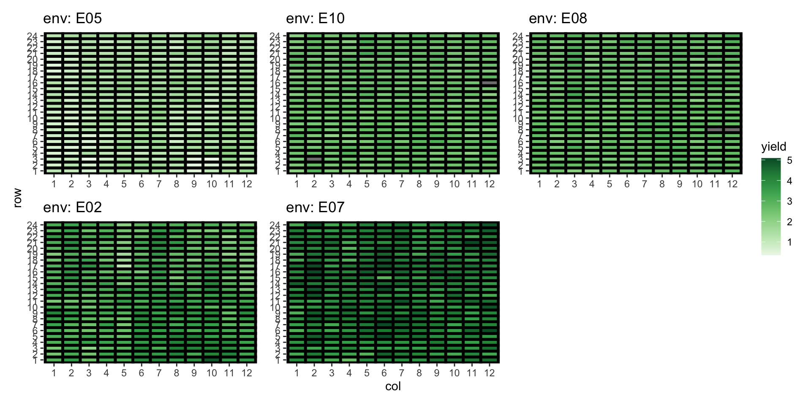

Analysis of a multi-environmental field trial
Emi Tanaka
Australian National University
2025-07-10
Multi-environment trials
- Multi-environment trials (METs) are field experiments conducted in multiple locations and/or seasons to evaluate the performance of different crop genotypes.
- Trial location and season/year is used synonymously with “environment”
Approach 1: Fit separate models to each environment
For i = 1, ..., E = 5, assuming observations are ordered by row then column,
\boldsymbol{y}_i = \boldsymbol{1}_{n}{\color{orange}\mu_i} + \mathbf{Z}_{g_i}\boldsymbol{u}_{g_i} + \mathbf{Z}_{b}\boldsymbol{u}_{b_i} + \boldsymbol{e}_i,Approach 2: Fit a DIAG model
\boldsymbol{y} = \begin{bmatrix}\boldsymbol{y}_1\\\boldsymbol{y}_2\\\boldsymbol{y}_3\\\boldsymbol{y}_4\\\boldsymbol{y}_5\end{bmatrix} = (\mathbf{I}_E\otimes\boldsymbol{1}_{n})\boldsymbol{\mu} + \mathbf{Z}_{ge}{\color{orange}\boldsymbol{u}_{ge}} + (\mathbf{I}_E\otimes\mathbf{Z}_b)\boldsymbol{u}_b + \boldsymbol{e}
\boldsymbol{u}_{ge}\sim N\left(\boldsymbol{0}, {\color{orange}\begin{bmatrix}\sigma^2_{g_1}\mathbf{I}_G & \mathbf{0} & \mathbf{0} & \mathbf{0} & \mathbf{0}\\\mathbf{0} & \sigma^2_{g_2}\mathbf{I}_G & \mathbf{0} & \mathbf{0} & \mathbf{0}\\\mathbf{0} & \mathbf{0} & \sigma^2_{g_3}\mathbf{I}_G & \mathbf{0} & \mathbf{0}\\\mathbf{0} & \mathbf{0} & \mathbf{0} & \sigma^2_{g_4}\mathbf{I}_G & \mathbf{0}\\\mathbf{0} & \mathbf{0} & \mathbf{0} & \mathbf{0} & \sigma^2_{g_5}\mathbf{I}_G\end{bmatrix}}\right), \boldsymbol{u}_{b}\sim N\left(\boldsymbol{0}, \text{diag}(\sigma^2_{b_1}, \sigma^2_{b_2}, \sigma^2_{b_3}, \sigma^2_{b_4}, \sigma^2_{b_5})\otimes \mathbf{I}_B\right), \boldsymbol{e}\sim N\left(\boldsymbol{0}, \text{diag}(\sigma^2_{1}, \sigma^2_{2}, \sigma^2_{3}, \sigma^2_{4}, \sigma^2_{5})\otimes \mathbf{I}_n\right)
Single site analysis vs MET analysis
What do you notice from below?
# A tibble: 15 × 5
term estimate std.error statistic constraint
<chr> <dbl> <dbl> <dbl> <chr>
1 env:block!env_E02 0.0276 0.0415 0.666 P
2 env:block!env_E05 0.0257 0.0372 0.691 P
3 env:block!env_E07 0.000000264 NA NA B
4 env:block!env_E08 0.00691 0.0101 0.685 P
5 env:block!env_E10 0.00127 0.00207 0.611 P
6 env:gen!env_E02 0.0648 0.0303 2.14 P
7 env:gen!env_E05 0.0654 0.0140 4.66 P
8 env:gen!env_E07 0.151 0.0228 6.64 P
9 env:gen!env_E08 0.0249 0.00514 4.85 P
10 env:gen!env_E10 0.0271 0.00495 5.47 P
11 env_E02!R 0.231 0.0317 7.28 P
12 env_E05!R 0.0747 0.0105 7.09 P
13 env_E07!R 0.0781 0.0112 7.01 P
14 env_E08!R 0.0277 0.00385 7.19 P
15 env_E10!R 0.0232 0.00325 7.12 P # A tibble: 3 × 5
term estimate std.error statistic constraint
<chr> <dbl> <dbl> <dbl> <chr>
1 block 0.0276 0.0415 0.665 P
2 gen 0.0648 0.0303 2.14 P
3 units!R 0.231 0.0317 7.28 P # A tibble: 3 × 5
term estimate std.error statistic constraint
<chr> <dbl> <dbl> <dbl> <chr>
1 block 0.0257 0.0372 0.692 P
2 gen 0.0654 0.0140 4.66 P
3 units!R 0.0747 0.0105 7.09 P # A tibble: 3 × 5
term estimate std.error statistic constraint
<chr> <dbl> <dbl> <dbl> <chr>
1 block 0.00000000791 NA NA B
2 gen 0.151 0.0228 6.64 P
3 units!R 0.0782 0.0112 7.01 P # A tibble: 3 × 5
term estimate std.error statistic constraint
<chr> <dbl> <dbl> <dbl> <chr>
1 block 0.00692 0.0101 0.684 P
2 gen 0.0249 0.00514 4.85 P
3 units!R 0.0277 0.00385 7.18 P # A tibble: 3 × 5
term estimate std.error statistic constraint
<chr> <dbl> <dbl> <dbl> <chr>
1 block 0.00127 0.00200 0.633 P
2 gen 0.0271 0.00495 5.47 P
3 units!R 0.0232 0.00326 7.11 P Approach 3: Fit a CS model
\boldsymbol{y} = (\mathbf{I}_E\otimes\boldsymbol{1}_{n})\boldsymbol{\mu} + \mathbf{Z}_g{\color{orange}\boldsymbol{u}_g} + \mathbf{Z}_{ge}{\color{orange}\boldsymbol{u}_{ge}} + (\mathbf{I}_E\otimes\mathbf{Z}_b)\boldsymbol{u}_b + \boldsymbol{e}
where \boldsymbol{u}_g \sim N(\boldsymbol{0}, {\color{orange}\sigma^2_g\mathbf{I}_G}), \boldsymbol{u}_{ge} \sim N(\boldsymbol{0}, {\color{orange}\sigma^2_{ge}\mathbf{I}_{GE}}) and other random effects distributed as Approach 2.
\boldsymbol{1}_E \otimes \boldsymbol{u}_g + \boldsymbol{u}_{ge} \sim N\left(\boldsymbol{0}, \underbrace{{\color{orange}\begin{bmatrix}\small\sigma^2_g + \sigma^2_{ge} & \small\sigma^2_g & \small\sigma^2_g & \small\sigma^2_g & \small\sigma^2_g \\\small\sigma^2_g &\small\sigma^2_g + \sigma^2_{ge} &\small\sigma^2_g & \sigma^2_g & \small\sigma^2_g\\\sigma^2_g & \small\sigma^2_g &\small\sigma^2_g + \sigma^2_{ge} & \small\sigma^2_g & \small\sigma^2_g\\\small\sigma^2_g &\small \sigma^2_g &\small\sigma^2_g & \small\sigma^2_g + \sigma^2_{ge} & \small \sigma^2_g\\\small\sigma^2_g &\small\sigma^2_g & \small\sigma^2_g &\small \sigma^2_g & \small\sigma^2_g+ \sigma^2_{ge}\end{bmatrix}}}_{{\color{orange}\text{compound symmetry}}}\otimes \mathbf{I}_G \right)
- Note: in this forumlation \sigma^2_g > 0 so covariance/correlation between same genotype across environment is always positive.
Yield distribution across environment



Approach 4: Fit an US model
\boldsymbol{y} = (\mathbf{I}_E\otimes\boldsymbol{1}_{n})\boldsymbol{\mu} + \mathbf{Z}_{ge}{\color{orange}\boldsymbol{u}_{ge}} + (\mathbf{I}_E\otimes\mathbf{Z}_b)\boldsymbol{u}_b + \boldsymbol{e}
\boldsymbol{u}_{ge}\sim N\left(\boldsymbol{0}, \underbrace{{\color{orange}\begin{bmatrix}\small\sigma^2_{g_1} & \small\sigma_{g_{12}} & \small\sigma_{g_{13}} & \small\sigma_{g_{14}} & \small\sigma_{g_{15}}\\\small\sigma_{g_{12}} & \small\sigma_{g_{2}}^2 & \small\sigma_{g_{23}} & \small\sigma_{g_{24}} & \small\sigma_{g_{25}}\\ \small\sigma_{g_{13}} & \small\sigma_{g_{23}} & \small\sigma_{g_{3}}^2 & \small\sigma_{g_{34}} & \small\sigma_{g_{35}}\\ \small\sigma_{g_{14}} & \small\sigma_{g_{24}} & \small\sigma_{g_{34}} & \small\sigma_{g_{4}}^2 & \small\sigma_{g_{45}}\\ \small\sigma_{g_{15}} & \small\sigma_{g_{25}} & \small\sigma_{g_{35}} & \small\sigma_{g_{45}} & \small\sigma_{g_{5}}^2 \end{bmatrix}}}_{\color{orange}\text{unstructured}} \otimes \mathbf{I}_G\right)
- Flexible model that “borrows strength” across environments for more accurate prediction of \boldsymbol{u}_{ge}.
Number of parameters to estimate in an US model
| # Environment | # Parameters |
|---|---|
| 2 | 3 |
| 3 | 6 |
| 5 | 15 |
| 10 | 55 |
| 25 | 325 |
| 50 | 1275 |
| 100 | 5050 |
| E | E(E + 1)/2 |
\mathbf{G}_{e} = \begin{bmatrix}\small\sigma^2_{g_1} & \small\sigma_{g_{12}} & \small\sigma_{g_{13}} & \small\sigma_{g_{14}} & \small\sigma_{g_{15}}\\\small\color{grey}\sigma_{g_{12}} & \small\sigma_{g_{2}}^2 & \small\sigma_{g_{23}} & \small\sigma_{g_{24}} & \small\sigma_{g_{25}}\\ \color{grey}\small\sigma_{g_{13}} & \color{grey}\small\sigma_{g_{23}} & \small\sigma_{g_{3}}^2 & \small\sigma_{g_{34}} & \sigma_{g_{35}}\\ \color{grey}\small\sigma_{g_{14}} & \color{grey}\small\sigma_{g_{24}} & \color{grey}\small\sigma_{g_{34}} & \small\sigma_{g_{4}}^2 & \small\sigma_{g_{45}}\\ \color{grey}\small\sigma_{g_{15}} & \color{grey}\small\sigma_{g_{25}} & \color{grey}\small\sigma_{g_{35}} & \color{grey}\small\sigma_{g_{45}} & \small\sigma_{g_{5}}^2 \end{bmatrix}
- The number of parameters to be estimated grows quadratically with the number of environments so it quickly becomes too many parameters to estimate.
Approach 5: Fit a FA model
For some order K, estimate the unstructured covariance with the factor analytic form:
\mathbf{G}_e \approx \mathbf{\Lambda}\mathbf{\Lambda}^\top + \mathbf{\Psi}
where
\mathbf{\Lambda} = \underbrace{\begin{bmatrix}\lambda_{11} & 0 & \cdots & 0\\\lambda_{21} & \lambda_{22} & \ddots &0\\\lambda_{31} & \lambda_{32} & \cdots &0\\\lambda_{41} & \lambda_{42} & \cdots &0\\\lambda_{51} & \lambda_{52} & \cdots &\lambda_{5K}\end{bmatrix}}_{\text{loading matrix (with corner constraints)}}\quad\text{and}\quad \mathbf{\Psi} = \underbrace{\begin{bmatrix}\psi_1 & 0 & 0 & 0 & 0\\0 & \psi_2 & 0 & 0& 0\\0& 0 & \psi_3 & 0 & 0\\0 & 0 &0 & \psi_4 & 0\\0 & 0& 0&0& \psi_5\end{bmatrix}}_{\text{specific variances}}.
Number of parameters to estimate in a FA model
| # Env | US | FA1 | FA2 | FA3 | FA4 |
|---|---|---|---|---|---|
| 2 | 3 | 4 | 5 | ||
| 3 | 6 | 6 | 8 | 9 | |
| 5 | 15 | 10 | 14 | 17 | 19 |
| 10 | 55 | 20 | 29 | 37 | 44 |
| 25 | 325 | 50 | 74 | 97 | 119 |
| 50 | 1275 | 100 | 149 | 197 | 244 |
| 100 | 5050 | 200 | 299 | 397 | 494 |
- FA model of order K has (K+1)E - K(K - 1)/2 parameters to estimate.
- The number of variance parameters to estimate for FA model grows linearly with the number of environments.
- The FA model can be thought of as low-order approximation of the US model.
Latent variable model
- FA model is a special case of latent variable model when the responses are conditionally normally distributed
\boldsymbol{u}_{ge} = (\mathbf{\Lambda} \otimes \mathbf{I}_G) \boldsymbol{f} + \boldsymbol{\delta} assuming \boldsymbol{f} \sim N(\boldsymbol{0}, \mathbf{I}_{GK}) \quad\text{and}\quad\boldsymbol{\delta}\sim N(\boldsymbol{0}, \mathbf{\Psi}\otimes \mathbf{I}_G).
- Under above assumption:
\boldsymbol{u}_{ge} \sim N(\boldsymbol{0}, (\mathbf{\Lambda}\mathbf{\Lambda}^\top + \mathbf{\Psi})\otimes \mathbf{I}_G).
Interpreting the latent variable model
\boldsymbol{u}_{ge} = \underbrace{(\mathbf{\Lambda} \otimes \mathbf{I}_G) \boldsymbol{f}}_{\text{G}\times\text{E Regression}} + \underbrace{\boldsymbol{\delta}}_{\text{Residual G}\times\text{E}}
- Notice that this is like a linear regression model except the covariates (\mathbf{\Lambda}) are estimated from the data.
- The \mathbf{\Lambda} represent some shared latent environment covariate.
- \boldsymbol{f}, referred to as common factor, represent how the genotype responds to that covariate.
- \boldsymbol{\delta}, referred to as specific factor, represent an effect specific to that environment.
Fitting FA models
Or equivalently:
Key takeaways
- When you have a MET data, think of the covariance structure in the model.
- DIAG models can be equivalent to fitting separate models to each environment.
- CS models can be too restrictive to realistically model the data.
- US models are flexible and borrow strength across environments but the number of parameters to estimate can become prohitively large.
- FA models are low-order approximation to US models.
- FA models can also have possible interpretations useful for breeding.
Reference
Smith et al (2015) Factor analytic mixed models for the provision of grower information from national crop variety testing programs. Theor Appl Genet.